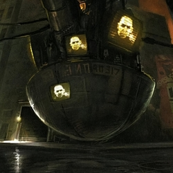
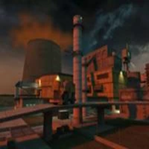

CONTENIDO ELIMINADO Y INFORMACION DE LA BETA:
"Hay mucho valor en el refinamiento. Hay una agresiva declaración de este principio, que no es del todo cierto, pero que sigue siendo interesante: No importa lo que nosotros recortemos, mientras que lo recortemos y nos de el tiempo para enfocarnos en otras cosas porque cualquiera de las opciones serían malas, a menos de que esten terminadas, y cualquiera de ellas serían buenas si estuvieran terminadas"
―Gabe Newell
Half-Life 2 filtrado (también conocido como Half-Life 2 Alpha o Half-Life 2 Beta), es un nombre genérico que se refiere
El libro Half-Life 2: Raising the Bar y los numerosos archivos que se filtraron revelan que muchos de los ajustes originales y escenas se recortaron o eliminaron del juego final. Half-Life 2 fue originalmente destinado a ser un juego mucho más oscuro con una obra de arte mucho más dura, en donde la Alianza drenaría el mar, para conseguir minerales y cambiando la atmosfera terrestre por gases novicios y turbios. Half-Life 2 fue también originalmente destinado a ser mucho más diverso en ajustes, y el recorrido iba a ser mucho más largo (en la medida en que el juego estaba casi exagerado, poco tiempo después se empezó a gastar tiempo en el desarrollo de personajes existentes, una de las razones clave para que se eliminara contenido). Varios niveles de la Ciudad 17 al inicio del juego y capítulos completos de la segunda mitad del juego se eliminaron por completo y algunos se reintrodujeron los en posteriores episodios de Half'-Life 2.
Partes del libro Half-Life: Raising the bar y los archivos filtrados detallan como Gordon lucharía junto a personajes como Odell en el Borealis, así como luchar junto con el Capitán Vance y las fuerzas de Vance
la Ciudad 17. Originalmente, Eli y Alyx Vance no tenía ninguna relación, el laboratorio de Eli fue localizado en una cueva en un depósito de chatarra y fue mucho más "áspero" que el laboratorio mostrado en la versión final, con una central hidroeléctrica (la zona del depósito de chatarra donde el tutorial del Arma de Gravedad toma lugar, siendo un área auxiliar a diferencia de la mayor parte del laboratorio, es una reminiscencia del concepto original). La Ciudadela también se ve muy diferente, era más redonda que la voluminosa Ciudadela de la versión final.
Mientras que el juego jugable que se filtró en el año 2003 era bastante similar al producto actual y ya recortado en gran medida, este primer período de desarrollo del juego muestra un estilo muy diferente. En este punto, Ciudad 17 es una ciudad americana de la Costa Este basado en Washington DC, con muchos rascacielos, y tuvo un muy básico, diseño de bloques en FPS (juegos de primera persona). Fue más fiel al concepto de arte visto enRaising the Bar: oscuro, gótico, siniestro, de lluvia, niebla, arenosa, con un montón de ladrillos, metal y vidrio, llevarse bien con el concepto de recorte de los Combine de reemplazar el aire con gases tóxicos y el drenaje de los océanos. Por lo tanto, una mucho más distópica, el universo orwelliano (a pesar de que el producto final sigue siendo muy orwelliano), incluso con toques de estilo steampunk ciberpunk.
Los Combine usaban y reciclaban bastante los materiales de los humanos existentes y edificios, en lugar de agregar su propia tecnología para ellos. Por eso, por ejemplo, la primera Ciudadela tenía sus paredes cubiertas de azulejos.
Durante el transcurso dirigido al filtrado de 2003, el equipo añadió más períodos, como los 30, los 40 y los 70, para finalmente llegar a un estilo más oriental post-comunista que vemos en la versión final del juego, con edificios más antiguos y pequeños, y un universo brillante en lugar de uno oscuro, que está más en la vena del Half-Life original. Los niveles de Ravenholm son una reminiscencia del estilo original, aunque los rascacielos americanos del estilo Costa Este fueron removidos.
Observe que no todos los conceptos estaban no presentes en el proceso de desarrollo al mismo tiempo, ya que el juego todavía era un muy áspero y en un estado trabajo-en-progreso.
FILTRACION:
Half-Life 2 no era más que un rumor hasta que se presentó en el E3 en mayo de 2003, esto causó altos niveles de expectación, donde ganó varios premios por mejor espectáculo. Tenía una fecha de lanzamiento para septiembre de 2003, pero se postergó. Este empuje hacia atras de la fecha de estreno de Half-Life 2 se produjo ya que la red interna de Valve fue hackeada a través de una conexión de sesión nula para Tangis del que fue anfitrión en la red de Valve y una subida posterior del shell ASP, resultando en la filtración de código fuente del juego en Internet a principios de septiembre de 2003. El 2 de octubre de 2003, Gabe Newell, el CEO de Valve, explico públicamente en los foros HalfLife2.net los acontecimientos que Valve experimentó cuando se filtró el código del juego, y pidió a los usuarios localizar a los autores si es posible.
En junio de 2004, Valve anunció en un comunicado de prensa que el FBI había arrestado a varias personas sospechosas de estar implicadas en el filtrado del código fuente. Valve afirma que el juego había sido filtrado por un hacker alemán llamado Axel Gembe, alias "Ago", nacido en 1982. Gembe luego contactó a Newell a través del correo electrónico (que también proporciona un documento inédito de programaciónes de los actos E3). Gembe fue llevado a creer que Valve quería darle trabajo como auditor de seguridad en el local. Él se iba a ofrecer un vuelo con destino a los EE.UU. y había de ser arrestado a su llegada por el FBI. Cuando el gobierno alemán se dio cuenta del plan, Gembe fue arrestado en Alemania en vez, y llevado a juicio por la filtración, así como otros delitos informáticos en noviembre de 2006, tales como la creación de Agobot, un troyano eficaz para robar datos de usuarios.
En el juicio en noviembre de 2006 en Alemania, Gembe fue sentenciado a libertad condicional de dos años. Al imponer la sentencia, el juez tuvo en cuenta factores tales como la infancia difícil de Gembe y el hecho de que estaba tomando medidas para mejorar su situación.
Aunque Valve nunca ha hecho ninguna declaración oficial acerca de cómo los archivos filtrados deben ser considerados y utilizados por la comunidad, no se han tomado medidas contra los sitios web o las personas que usan y alojan contenido filtrado-relacionado, y Valve sancionado sitios web tales como el equipo de Garry's Mod que alojaba mucho material filtrado relacionado y a discutir, no está prohibido en los foros del sitio web Facepunch (que estaba prohibido en el pasado). El consenso general sería entonces que Valve no se preocupa más por el uso de estos archivos filtrados y su uso y distribución no está prohibido, pero no bendita, siempre y cuando se utilizan de forma gratuita; cuando se le preguntó a Valve por correo electrónico el 20 de julio de 2009 sobre el estado de el mod basado en la Beta "Missing Information" la respuesta fue que "el mod no es ilegal descargarlo y jugar el tiempo que es sólo un mod".
Al estar en etapa de pre-desarrollo, evidentemente, el juego está muy incompleto, es bastante inestable, y algunos mapas no cargan. En este momento, los capítulos como el Air Exchange, el Borealis, o el Rascacielos que fueron recortados, y Ciudad 17 ya tenía su central / este estilo de Europa, haciendo de este juego muy similar al producto final y que representa lo que Half-Life 2 parecía en el año 2003. Por lo tanto, los recortes no se realizaron debido a que el juego se filtro, sino por otras razones, y mucho antes en el proceso de desarrollo.
CARACTERISTICAS ELIMINADAS DE LA VERSION FINAL:
ENEMIGOS ELIMINADOS:
Muchos enemigos fueron recortados. Los más destacados son:
Combine Assasin. Una mujer soldado, ella es la sucesora de la Asesina de negro de Half-Life. Está incluida en Half-Life 2: Survivor. Algunos de sus IA (Inteligencia artificial) fueron recicladas para el Fast Zombie, su diseño del casco fue para el Combine Elite Overwatch.
Alien Assasin. Una criatura humanoide vestido de negro que se comportaría como un estereotipo de ninja. Algunos de sus IA fueron recicladas para el Fast Zombie.
Bullsquid. Se comporta exactamente igual al del Half-Life original, pero con una piel rojiza. Uno de los mapas filtrados establecido en los canales de Ciudad 17, tiene una sección diseñada en torno para que los Bullsquids nadaran, pero no entran al agua.
Houndeye. Se comportaría de manera similar al del Half-Life original, pero había que hacer mayor hincapié en que los Houndeyes se comportaban como una manada de lobos. Su modelo filtrado está corrupto, pero sus texturas son todavía visibles.
Cremator. Mantenía limpiaba las calles de los cuerpos después de una escaramuza con una pistola de ácido masivo llamada Immolator, que se duplicaría como arma ofensiva, cuando el Cremator se convertiría en un enemigo. No tiene la IA en el filtrado.
Hydra. Una criatura extensa, con tentaculos de color azul y con una aguja larga al final. Aunque impresionante de ver, la Hydra era mucho menos interesante cuando tenías que enfrentarla.
El Combine Guard. Es un soldado gigante transhumano que esgrime un arma llamada Combine Guard Gun. El arma es esencialmente una versión portátil del láser de los Strider. El Combine Guardian sólo aparece en mapa "e3_terminal", pero puede ser generado en cualquier lugar. Es invulnerable.
ARMAS ELIMINADAS:
Durante el desarollo de Half-Life 2, su impresionante arsenal de armamento ha variado considerablemente, y que contenía varias armas diferentes que cuando el juego se hizo público, armas que fueron recortados después antes del lanzamiento final.
Se ha sugerido que la mayor parte de las armas se redujeron debido al hecho de que eran demasiado similares entre sí, como el AK-47 cumplió una función muy similar a la AR2, y el OICW lo misma que la SMG1, y que no sería muy creíble sostener más de 25 armas, a pesar de que un sistema de armas limitada se llevó a cabo en algún momento, teniendo el jugador que tirar un arma antes de levantar una nueva.
La mayoría, si no todas estas armas son utilizables en la beta jugable y el Mod Missing Information, aunque a veces con algunos cambios.
VEHICULOS:
Camión del AirEx (estático)
Excavadora
Jet Ski
FUEGO AMIGO
Half-Life 2 inicialmente contenía fuego amigo, al igual que Half-Life. Valve encontró que esto es molesto para jugadores de prueba, ya que a menudo accidentalmente matan a sus compañeros de equipo, por lo que se cambió para que las armas no hagan daño a los aliados.
ARCHIVOS FILTRADOS:
Los archivos filtrados en 2003 consistían en una beta jugable disponible en dos versiones, la beta llamada "anon" y la beta "Rusa", que sonligeramente diferentes. Una de las pocas diferencias notables entre las dos es la presencia de armas tempranas, como el Inmolador, la Arma de Guardia de la Vigilancia, etc. Estas armas sólo aparecen en la beta "Rusa". La beta "Rusa" también cuenta con una instalación adecuada, mientras que la "anón" no es más que un archivo zip. La beta "anon" contiene en su raíz un archivo .txt modificado por última vez en octubre de 2003, con estas palabras:
"Solo crea un servidor para jugar.Helicoptero en el capítulo de los canales
Helicoptero
en la consola, usa "noclip" cuando se atasque.
Realmente lleno de errores, seguro que Valve no lo lanzara antes de un tiempo.
Diviertete !!!"
Al estar en etapa de pre-desarrollo, evidentemente, el juego está muy incompleto, es bastante inestable, y algunos mapas no cargan. En este momento, los capítulos como el Air Exchange, el Borealis, o el Rascacielos que fueron recortados, y Ciudad 17 ya tenía su central / este estilo de Europa, haciendo de este juego muy similar al producto final y que representa lo que Half-Life 2 parecía en el año 2003. Por lo tanto, los recortes no se realizaron debido a que el juego se filtro, sino por otras razones, y mucho antes en el proceso de desarrollo.
IMAGENES:



Ir a la pagina:
1 2 3 4 5 6 7